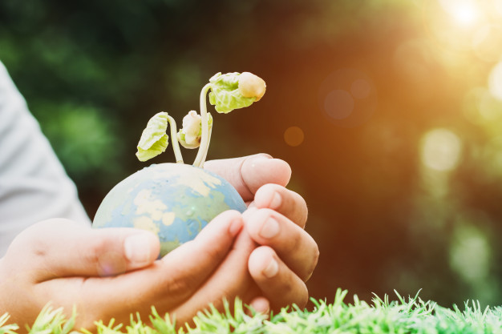

ODS 15

Floresta, Mares e Terras
vida humana depende da terra tanto quanto do oceano para seu sustento e subsistência. A vida vegetal fornece 80% da nossa dieta e contamos com a agricultura como um importante recurso econômico e meio de desenvolvimento. As florestas representam 30% da superfície terrestre, fornecendo habitats vitais para milhões de espécies e fontes importantes de ar e água limpa.
Na Atualidade
Hoje, estamos vendo uma degradação sem precedentes da terra e a perda de terras aráveis de 30 a 35 vezes a taxa histórica. A seca e a desertificação também aumentam a cada ano, o que representa a perda de 12 milhões de hectares e afeta as comunidades pobres em todo o mundo. Das 8.300 raças de animais conhecidas, 8% estão extintas e 22% estão em risco de extinção.
Finalidade
Os ODS visam conservar e restaurar o uso de ecossistemas terrestres, como florestas, zonas húmidas, terras secas e montanhas até 2020. O fim do desmatamento é vital para mitigar o impacto das mudanças climáticas. Medidas urgentes devem ser tomadas para reduzir a perda de habitats naturais e da biodiversidade.
Leia mais aqui